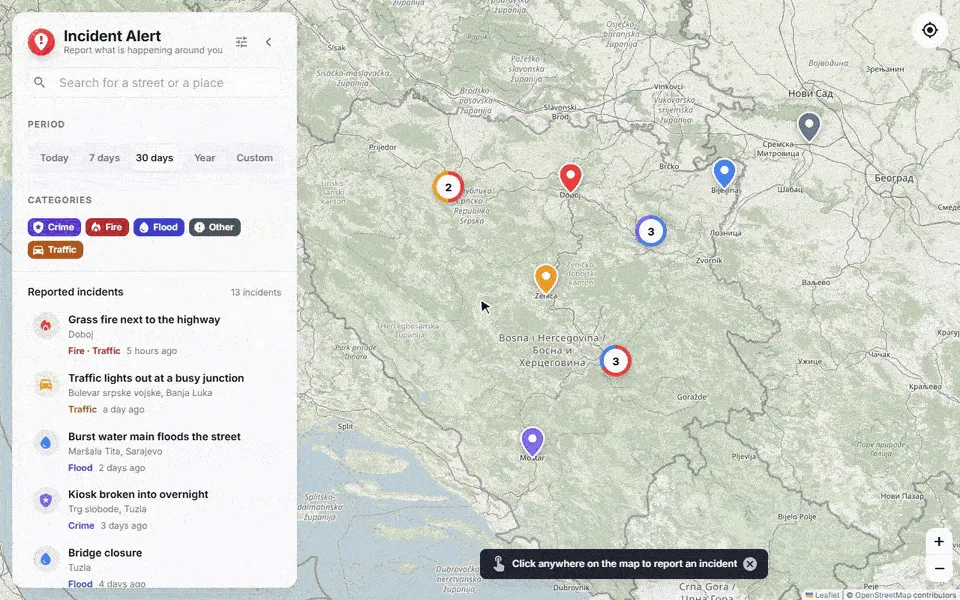

Incident Alert
Citizens report incidents on a map; moderators approve them first.
- React apps
- ASP.NET services
- RabbitMQ
- PostgreSQL

Citizens report incidents on a map with photos; nothing reaches the public map until a moderator approves it. Four ASP.NET Core 10 services: a public API, a moderation service with its own database, ML.NET k-means grouping of similar reports, and statistics with hot spots and daily trends. Reports, approvals and categories travel as MassTransit events over RabbitMQ, photos included. Accounts are approved by an admin, and Google ID tokens are verified on the server. 94 backend and 108 frontend tests; CI runs an end-to-end smoke test against the whole Docker stack and publishes the images to GHCR.
- ASP.NET
- C#
- React
- RabbitMQ
- MassTransit
- PostgreSQL
- ML.NET
- Leaflet
- Docker
- Microservices
- JWT
- REST APIs